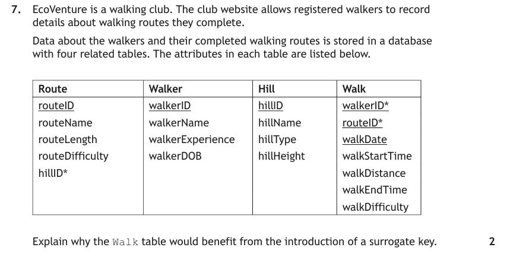
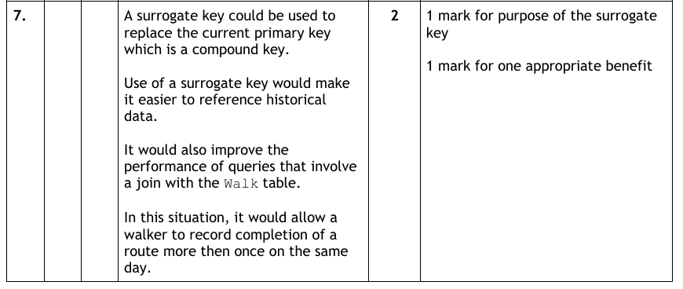
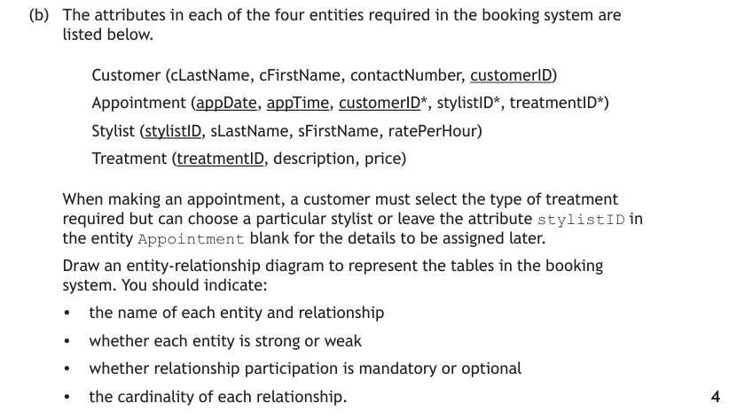
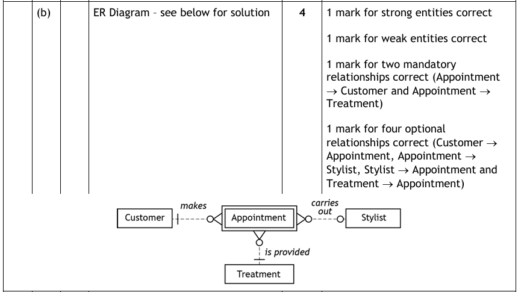

ER Diagrams at Advanced Higher
At Higher, an ER diagram showed entity names, attributes, relationship names and cardinality. Advanced Higher keeps all of that and adds two new pieces of notation: entity type (strong or weak) and relationship participation (mandatory or optional) — plus a design technique, the surrogate key, that can change one into the other.
These four ideas are not separate facts to memorise — they explain each other. A weak entity exists because its key depends on another entity; that dependence is why the owner's participation is mandatory; and a surrogate key removes the dependence, turning weak into strong. Read this page in order and each section should make the previous one click.
Key Terms
Higher Recap — ER Diagrams & Cardinality
Quick recap, because every Advanced Higher diagram is built on this. An ER diagram has a rectangle per entity, joined by lines showing each relationship, with the relationship name written on the line and cardinality shown in crow's-foot notation (the fork sits at the "many" end):
| Cardinality | Meaning | Example |
|---|---|---|
| One-to-one (1:1) | One occurrence of A links to exactly one of B, and vice versa. | One customer holds one passport. |
| One-to-many (1:M) | One occurrence of A links to many of B; each B links to one A. | One resort is the location for many hotels. |
| Many-to-many (M:M) | Many of A link to many of B — cannot be implemented directly; resolved with a link entity into two 1:M relationships. | Many bookings include many destinations. |
And the Higher rule that turns diagram questions mechanical: a foreign key always sits on the "many" side — find the foreign key and you've found the crow's foot. Attributes are shown as ellipses (or listed), with the primary key underlined and foreign keys starred.
Strong & Weak Entities
Now the first Advanced Higher addition. Look at the entities' primary keys, and ask: could this entity exist on its own?
- A strong entity has a primary key that uniquely identifies each occurrence by itself. Its existence does not depend on any other entity.
- A weak entity depends on one or more owner entities for its existence — its primary key is formed, in part, using the primary key of its owner(s). It cannot be used independently.
On the diagram, a weak entity is indicated with a double line (check the notation — this is exactly what the spec expects).
Four entities, primary keys underlined, foreign keys starred:
| Resort | Hotel | Customer | Booking |
|---|---|---|---|
| resortID | hotelRef | customerNo | hotelRef* |
| resortName | hotelName | firstname | customerNo* |
| resortType | resortID* | surname | startDate |
| starRating | address | numberOfNights | |
| mealPlan | town | numberInParty | |
| pricePersonNight | postcode |
Resort and Customer are strong: each has its own primary key that identifies every occurrence, depending on nothing else. Booking is weak: its primary key is a compound key built from hotelRef and customerNo — the primary keys of Hotel and Customer — so a booking cannot exist without them. Hotel is also weak, because its existence relies on resortID from Resort — every hotel must belong to a resort.
Surrogate Keys
Here's why weak entities matter in practice: compound keys are clumsy. Booking's primary key is hotelRef + customerNo + startDate — three fields that every related table would have to store as foreign keys. The fix is to introduce a surrogate key: an arbitrary value that is unique for each row, typically an auto-incrementing number with no real-world meaning.
Add bookingID (auto-increment) as the primary key of Booking. hotelRef and customerNo stay in the table — but now as plain foreign keys, not parts of the primary key.
Two consequences — and this is the connection examiners probe:
- The introduction of a surrogate key changes a weak entity into a strong entity — the entity now has its own uniquely identifying key, so it no longer depends on its owners for identification;
- It reduces the complexity of compound keys — related tables reference one small field instead of three.
Surrogate keys also replace meaningful primary keys (like a postcode or registration) that could legitimately change — an arbitrary number never needs to change, which protects the links between tables.
Worked Example

Approach: identify the existing primary key and why it is awkward (compound, or meaningful and liable to change). A surrogate key is an arbitrary, unique, usually auto-incrementing value added as the new primary key — use those three adjectives in your answer.

Relationship Participation
The second Advanced Higher addition. Cardinality tells you how many; participation tells you whether taking part is compulsory. Participation is either:
- Mandatory — at least one occurrence of the entity must exist before any occurrences can be added to its associated entity. Shown with a vertical line ( | ) at that entity's end of the relationship;
- Optional — occurrences of one entity can be added without any existing occurrences in the associated entity. Shown with a bold circle ( ● ) at that end.
- Resort : Hotel (1:M) — Resort's participation is mandatory: every hotel must be located in exactly one resort (a hotel can't be added until its resort exists). Hotel's participation is optional: a resort may exist with no hotels.
- Hotel : Booking (1:M) — Hotel is mandatory: every booking must be for an existing hotel. Booking is optional: a hotel may exist without any bookings.
- Customer : Booking (1:M) — Customer is mandatory: every booking needs an existing customer. Booking is optional: customers on the mailing list may never have made a booking.
Now notice how this connects back to entity type: Booking is a weak entity precisely because its owners' participation is mandatory — a booking cannot be added until its hotel and customer exist. Weak entity, compound key, mandatory participation of the owner: three views of the same dependence. That's why exam answers that explain why ("Hotel is mandatory because each booking must be associated with exactly one hotel") score, while bare notation may not.
Participation Trainer
Placeholder for a trainer: given a scenario sentence ("a resort may or may not have hotels"), click the correct symbol for each end of the relationship and get instant feedback.
Putting It All Together
A complete Advanced Higher ER diagram question expects, for three or more entities:
- Entity names in rectangles — weak entities marked with a double line;
- Attributes (when asked) — primary keys underlined, foreign keys starred;
- Relationship name on each line;
- Cardinality — crow's foot at the many end;
- Participation — vertical line (mandatory) or bold circle (optional) at each end.
Work through them in that order every time and nothing gets forgotten: entities → keys (which reveal weak entities and relationships) → cardinality (foreign key = many side) → participation (can this end exist without the other?).
Worked Example
This part belongs to the big database-driven website question — first study the database structure it uses:


Approach: use the five-step checklist above. The foreign keys in the structure tell you where each crow's foot goes; then reason each participation end from the scenario — must this side exist first (vertical line), or can the other side exist without it (bold circle)?

Test Yourself
Attempt each question first, then expand the marking instructions to check your answer.
A school library database has three entities: Pupil (pupilID, name, class), Book (bookID, title, author) and Loan (pupilID*, bookID*, dateOut, dateDue).
Identify one weak entity in this database, justifying your answer. (2 marks)
Marking Instructions
- Loan is a weak entity (1 mark);
- because its (compound) primary key is formed using the primary keys of Pupil and Book — its existence depends on those owner entities, so a loan cannot exist without an existing pupil and book. (1 mark)
Describe how a surrogate key could be used to improve the design of the Loan entity above, and state the effect this has on the entity's type. (2 marks)
Marking Instructions
- Add an arbitrary, unique field such as
loanID(auto-increment) as the new primary key, replacing the three-field compound key;pupilIDandbookIDremain as ordinary foreign keys. (1 mark) - The Loan entity becomes a strong entity — it now has its own uniquely identifying primary key. (1 mark)
In a vet's database, every Appointment must be for an existing Animal, but an animal may be registered before it has any appointments.
State the participation of each entity in this relationship, and the symbol used for each on the ER diagram. (2 marks)
Marking Instructions
- Animal — mandatory participation: an animal must exist before an appointment can be added — shown with a vertical line. (1 mark)
- Appointment — optional participation: an animal may exist with no appointments — shown with a bold circle. (1 mark)